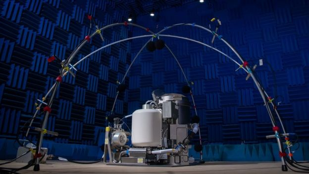

Nasa is to launch a new zero-gravity toilet for testing at the International Space Station (ISS) before its probable use in a future mission to the
The $23m (£17.8m) toilet, which sucks waste from the body, will be sent to the station on a cargo ship.
Nasa said the toilet's "vacuum system" was designed for the comfort of female astronauts, unlike previous models.
A rocket carrying the cargo ship was supposed to blast off from Wallops Island Virginia, on Thursday
But the mission was aborted less than three minutes before lift off because of technical difficulties.
Another launch attempt is due on Friday evening if engineers can fix the issues that caused Thursday's delay.
On board will be the Universal Waste Management System (UWMS), the new titanium space toilet that Nasa says will help astronauts "boldly go" during deep-
space missions.
The toilet uses a vacuum system to suck waste away from the body in a zero- gravity environment. For privacy, the toilet is located inside a cubicle - just like in a
public bathroom on Earth.
Nasa says the toilet represents an upgrade on the current facilities in the US part of the ISS.
Weighing 45kg (100lbs) and standing 28in (71cm) tall, the toilet is 65% smaller and 40% lighter than the one currently in use.
Designers also gave more consideration to the comfort of female astronauts.
"[A] big part of our project was optimising the use of the toilet for the female crew," Melissa McKinley, a Nasa project manager, told the BBC's US partner CBS News.
"Nasa spent a lot of time working with the crew members and doing evaluations to improve the use of the commode seat and the urine funnel to make it more accommodating to use by female crew members" she said.
 The toilet has been designed with female astronauts in mindThese design improvements will be put to the test on the ISS before they are eventually built into Orion capsules that will carry astronauts to the Moon.
A successful dry run, in every sense of the term, is what astronauts are hoping for.
"Cleaning up a mess is a big deal. We don't want any misses or escapes," Ms McKinley told the Associated Press news agency.
Northrop Grumman's Antares rocket will deliver the new toilet as part of a cargo run consisting of science equipment, crew supplies and spare parts.
Space toilets "use air flow to pull urine and faeces away from the body and into the proper receptacles", according to Nasa.
In a video posted to Twitter, Nasa astronaut Jessica Meir described the toilet as a "vacuum system".
"So imagine you have a vacuum cleaner and you're sucking things down. You turn on a big fan, so that's pulling everything down inside the toilet," she said.
There is a specially shaped funnel for urine and a seat for bowel movements, which can be used simultaneously.
"The UWMS seat may look uncomfortably small and pointy, but in microgravity it's ideal," Nasa said. "It provides ideal body contact to make sure everything goes
where it should."
When sat on the toilet, astronauts can use foot restraints and handholds to keep themselves from floating away.
The toilet can process and recycle urine as drinking water for the astronauts. As Ms Meir said, on the ISS "today's coffee is tomorrow's coffee".
Faecal waste is not given the same treatment, but Nasa says it is studying this capability.
"Just like everything else, going to the bathroom in space is something that you have to get used to," Ms Meir said.